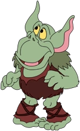
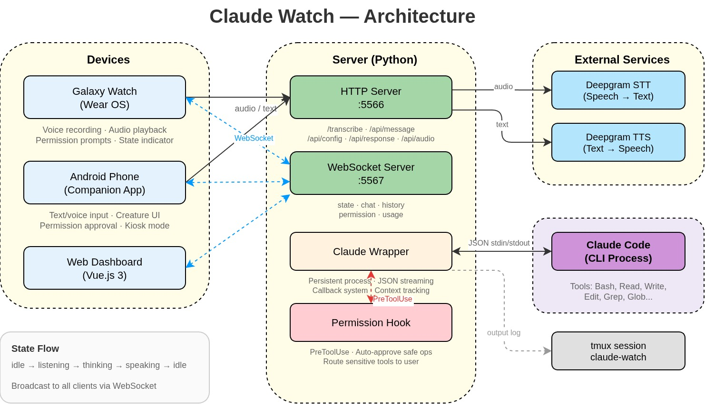
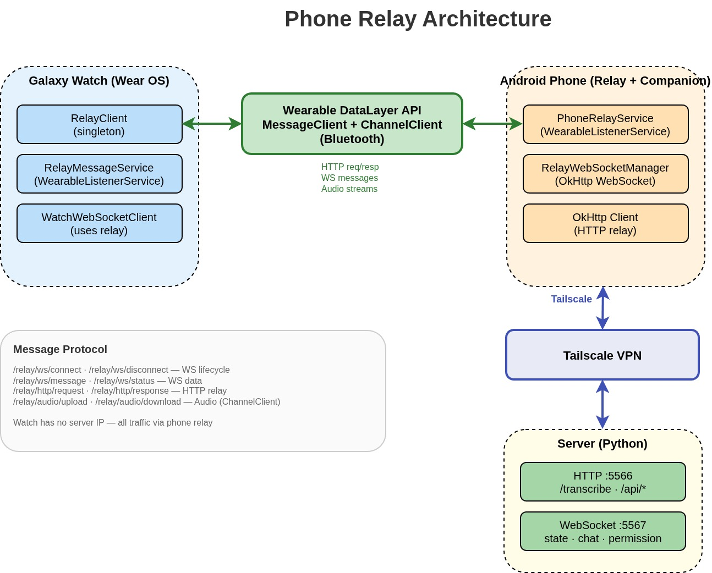

Toadie
Z Claude Code
Czyli jak stworzyłem swojego personalnego
multi-device bota, bez czytania i pisania kodu
Michal Franc
O mnie
- Staff+ Engineer
- 15+ lat w branży, 12+ lat dla rynku UK/US, firmy produktowe
- Obecnie Affirm (BNPL fintech), tech lead tech leadów, 30+ inżynierów
- Impact oriented individual contributor
- Polyglot software engineer
- Scalability / Reliability, architecture, system design, data driven product development
- Kiedyś współzałożyciel dotnetconf.pl i grupa .NET Wrocław na PWr
- mfranc.com · @francmichal
Psycho fan vima i i3wm · hobbystycznie pisze grę · maluje figurki Warhammera
A tak wyglądam ostatnie pół roku

Toadie?

Mój personalny bot napędzany Claude Codem
Ale konkrety, co to jest?
Claude Code z odpowiednim kontekstem, dostępny z komórki i zegarka (Kotlin, Wear OS), napędzany serwerem w Pythonie (WebSockety), z wbudowanym dashboardem Vue.js, dostępny poza siecią przez Tailscale i Cloudflare Tunnel, z systemem uprawnień i wsparciem STT/TTS od Deepgram.
Pokażę jak to wszystko działa...
...i dlaczego Kotlin w ogóle pojawił się na grupie .NET
SPOILER: bo to możliwe że już nie ma znaczenia
SPOILER2: pogadamy też o przyszłości naszej branży trochę
Demo, edycja notatek przez Toadie
Demo na żywo
"Hey Toadie, zaczęliśmy prezentację"
Jak to się zaczęło
Chciałem Superwhisper ale na Linuxie
- Dyktowanie do aktywnego okna
- Działa wszędzie, terminal, przeglądarka, Obsidian
- Bonus: przekieruj tekst do Claude jako komendy
Skrypt dyktowania
- Przechwycenie audio z mikrofonu
- Wysyłka do Deepgram (STT streaming)
- Tekst trafia do aktywnego okna przez
xdotool
Testowałem też: Whisper (lokalny), Google Cloud STT
Dlaczego Deepgram?
Zabezpieczenia przed kosztami
- Auto-stop po ciszy, skrypt kończy po 10s bez mowy
- Crontab, co 5 minut zabija procesy dyktowania
- Polybar, pokazuje czy dyktowanie jest włączone
Dyktowanie do instancji Claude Code
- Nowy skrypt, spawnuje instancję Claude Code
- Transkrypcja pipe'owana bezpośrednio do procesu
Problem: za każdym razem nowy proces, nowy kontekst...
Dyktowanie do persistent sesji Claude
- Claude CLI działa w
tmuxz nazwaną sesją - Transkrypcja buforowana i wysyłana przez
tmux send-keys -t session:pane - Dlaczego nie stdin/stdout? Nie działało dobrze, było błędogenne, tmux przyszedł z pomocą
Więc mam teraz możliwość gadania do Claude z mikrofonu
ale muszę być przy biurku
a przecież mam... zegarek na ręce ... hmmm
(nawet nie wiedziałem czy mój zegarek ma wbudowany mikrofon 🙈)
Galaxy Watch
- Galaxy Watch, klient Kotlin Wear OS, nagrywa audio, wyświetla odpowiedzi, odtwarza głos
- Serwer Python, lokalnie na maszynie, odbiera audio, wysyła do Deepgram, rozmawia z Claude
- Deepgram, STT + TTS, audio in → tekst out, tekst in → audio out
- Claude Code CLI, wrapper obsługuje input/output i lifecycle procesu, JSON streaming zamiast scrapowania tmux pane
- Sesja tmux, wrapper loguje wszystko do sesji
claude-watch, daje widoczność w to jak Claude pracuje
Demo, Galaxy Watch
Głos → zegarek → Python → Deepgram → Claude
Architecture

Permission Hooks
Server Dashboard
Zegarek, serwer, websockety, permission hooki - robi się skomplikowanie
- Timeline z wszystkimi akcjami serwera i timestampami
- Settings, zmiana języka, modelu
- Chat, wizualizacja konwersacji w real-time
- Vue.js, single-page, WebSocket live updates
- Pomaga debugować problemy, rozumieć flow, gdzie zacina się pipeline, co zoptymalizować
- Dostępny przez Cloudflare Tunnel
Demo, Server Dashboard
Demo na żywo
1. Timeline, settings, chat w akcji
2. Komenda + flow
[ screen share: browser ]
Aplikacja na telefon
Mam zegarek... czemu nie telefon? Więcej ekranu, a może nawet trochę osobowości?
Bo na telefonie można wyświetlić więcej niż na zegarku.
- Tamagotchi, zielony troll z animowanymi stanami (idle, słuchanie, myślenie, mówienie, spanie)
- Kolejna apka Kotlin, chat, wiadomości głosowe i tekstowe
- Z punktu widzenia serwera, klient jest abstrakcją
Demo, Aplikacja na telefon
Wiadomość tekstowa + głosowa → odpowiedź TTS
Architecture, pełny obraz
Telefon i dashboard to po prostu kolejni klienci. Dashboard też łączy się przez WebSocket.

Tailscale
Wszystkie urządzenia udają że są w jednej prywatnej sieci, nawet jeśli są w różnych miejscach.
- WireGuard, szyfrowany tunel
- Tailscale orkiestruje: tożsamość, zarządzanie kluczami, discovery
- Każde urządzenie dostaje IP
100.x.x.x - Świetny UX, prosta konfiguracja, it JUST works
Prywatny dostęp, Tailscale
Problem: zegarek nie ma Tailscale
Galaxy Watch nie wspiera Tailscale. Rozwiązanie: telefon jako relay.
- Watch → Phone → Server (przez Tailscale)
- Telefon działa jako transparentny proxy
- Android Wearable DataLayer do komunikacji watch↔phone (Bluetooth + WiFi lub cloud relay)

Wake Word
"Hey Toadie"
- PicoVoice Porcupine, działa lokalnie na telefonie
- Bez połączenia z serwerem (poza aktywacją klucza)
- 1 custom wake word za darmo
Moment "WOW"
Jak działa Wake Word
Demo, Wake Word
Demo na żywo
Powiedz "Hey Toadie", wake word uruchamia nagrywanie
[ screen share: phone ]
Demo, Rich Content
Demo na żywo
1. Wyślij screenshot na telefon przez toadie-show
2. Wyślij animację D3.js, np. wizualizacja ostatnich prezentacji wroc.net
[ screen share: phone + terminal ]
(Udało się dodać tę funkcję ale 2 dni temu więc ... może działa a może nie)
(możliwe że tutaj będziemy musieli ssh do bota i mu pomóc)
(jak coś pójdzie nie tak: ~/demo/wrocnet.html)
Co potrafi Toadie?
- Czyta cele, listę zadań, kalendarz, maile
- Dostęp do wszystkich notatek 2nd brain (Obsidian)
- Steruje monitorami (wejścia, jasność)
- Włącza TV i uruchamia apki na telewizorze (mam też apkę TV z botem)
- Dyskutuje pomysły, pisze posty na bloga, tworzy plany
Bezpieczeństwo, Defense in Depth
Tailscale + WireGuard
Peer Verification
Tech Stack
github.com/michal-franc/toadie-personal-assistant
Ile czasu zajęło napisanie tego całego kodu?
Wcale.
Nie napisałem ani linijki kodu
Nie przeczytałem ani linijki kodu
100% wygenerowane przez Claude Code
Co tak naprawdę robiłem
- Opisywałem czego chcę, naturalnym językiem
- Testowałem wynik, działa czy nie?
- Iterowałem, "to nie działa", "zmień to"
- Decydowałem o architekturze, nie o implementacji
Rozwój oparty na specyfikacji
Zarządzanie projektem przez GitHub
- Issues jako backlog pomysłów i bugów
- Pull Requesty z pełnym opisem zmian i planem testów
- Dyskusje w komentarzach, iteracje na review
- Bot tworzy PRy, ja reviewuję i mergeuję
- Pełna historia decyzji i zmian
- CI/CD Lintery, testy (to jest ważne)
- Każda funkcjonalność = branch + PR
- Transparentność, widać co bot zrobił i dlaczego
Przykłady: PR #74, beta plan testów · PR #49, duża zmiana
Wiele botów, wiele issues naraz
Każdy bot pracuje nad swoim issue w izolacji. Klucz: git worktrees.
- Każdy bot dostaje własny worktree, osobna kopia repo
- Brak konfliktów, boty nie nadpisują sobie zmian
- Każdy bot tworzy branch → PR → review
- Mogę odpalić 3-4 boty równolegle na różnych taskach
Worktree = tani klon repo bez kopiowania historii. Każdy bot ma swój sandbox.
Workflow: boty → beta → test
Bot Manager (testowane)
Harness Engineering
Spec to tylko jeden wymiar. Potrzebujemy systemu pętli które pomagają botowi zrozumieć co chcemy zbudować.
- CLAUDE.md, kontekst projektu, reguły, konwencje
- Git workflow, branches, PRy - review checkpointów
- Linters + CI, feedback loop
- context-doctor, utrzymywanie kontekstu
- Każda pętla = mniej błędów, lepsze wyniki
Budujemy uprząż (harness) która prowadzi bota w dobrym kierunku
Harness Engineering
Nie code-first, ale...
Zmiana podejścia do tworzenia produktów.
- Specka first, co budujemy, dlaczego, jakie ograniczenia
- Kontekst first, CLAUDE.md, pamięć, feature docs
- Harness engineering, budowanie mechanizmów kontroli bota
- Metryki first, jak zmierzymy sukces?
Zarządzanie kontekstem to klucz
CLAUDE.md, instrukcje które agent czyta przy każdej sesji
- Decyzje architektoniczne, ścieżki plików, komendy
- Konwencje testów, czego NIE robić
- Info o urządzeniach, portach, zależnościach
- Auto-pamięć, agent uczy się między sesjami
- CLAUDE.md rośnie organicznie, staje się nieaktualny
- context-doctor, linter dla CLAUDE.md
- Sprawdza złamane referencje, martwe komendy, sprzeczności
- github.com/michal-franc/context-doctor
Co jest w CLAUDE.md
context-doctor
github.com/michal-franc/context-doctor
METRICS
Lines: 119 (MODERATE)
Instructions: ~43 (+50 Claude = ~93) (OK)
Progressive Disclosure: YES
Scope Activity: 11 commits since last update (10 days ago)
LENGTH ISSUES
⚠ [CD002] File has more than 100 lines
→ Consider being more concise. Ideal ~60 lines
REFERENCED DOCS
✓ KLAUDIUSH.md (9 days ago)
✓ docs/server-api.md (9 days ago)
✓ docs/features/security.md (23 days ago)
DIMENSION SCORES
Correctness ███████████████████░ 95/100
Style ████████████████████ 100/100
Freshness ██████████████████░░ 90/100
OVERALL SCORE
███████████████████░ 96/100
Prawdziwe prompty, budowanie funkcjonalności
> "ok now on hey toadie after the wake word is detected it should open the app even if its in lock mode doable?"
> "could we make this to be kind of like a voice sin function?"
> "i also have critical bug now - watch is never refreshing chat even after sending new voice command"
> "ok but we should retry more often instead of dropping to idle timeout it should be exponential retry"
Prawdziwe prompty, debugowanie
> "can you check the logs i can still see flickering"
> "the screen is turning on - but then when i swipe i am not being taken to the app"
> "i now have the app in listening state its blocked on the overlay"
> "can you check request nr 8 from server and tell me why we need 3.3s to capture response?"
Prawdziwe prompty, reszta
> "ok install on the watch"
> "try again"
> "git push"
> "we change the app name you silly fool :D"
> "dude you keep confused we streamlined the name for both watch and phone"
> "ej wez sprawdz logi z zegarka bo cos websockety szwankuja i mi nie laczy"
> "yeah it works!"
Era personal software?
- Apki budowane wyłącznie dla siebie
- Nie dopieszczone, nie produkcyjne, ale działają dla Ciebie
- Musi działać tylko na Twojej maszynie, dla Twojego workflow
- Jedna osoba może zbudować to co wcześniej wymagało zespołu
Programowanie jako aktywność społeczna? Narzędzia szyte na miarę dla społeczności?
Era CLI
Bez IDE. Bez edytora. Tylko i3wm + tmux + alacritty + polybar

Czasem nawet edytuję notatki przez... Claude. Albo po prostu mówię Toadie żeby to zrobił, z kanapy.
Diagramy, draw.io MCP
Wygenerowane przez Claude przez mcp-drawio, bez ręcznego rysowania

Diagram architektury

Architektura phone relay
Ta prezentacja
Reveal.js + D3.js. Zbudowana w tej sesji z Claude Code.
> "2 slajd o mnie przeczytaj mfranc.com i wrzuc o mnie jakies tam info tez mozesz moje cv sprawdzic"
> "no i tez jest troche bledny popatrz tutaj to jest realny obrazek [screenshot] popraw d3"
> "i ten obrazek zaambedujemy i omowimy https://mfranc.com/images/dictation-architecture-simple.png"
> "albo lepiej zamien ten obrazek ze zrodla w d3.js nowa symulacje pod tytuilem ehh?"
> "przesun resolve hostname o 10px do gory | cache miss 20px na prawo"
> "ok 10 more and we are good :d"
Witamy w nowej erze?
mfranc.com
Q/A